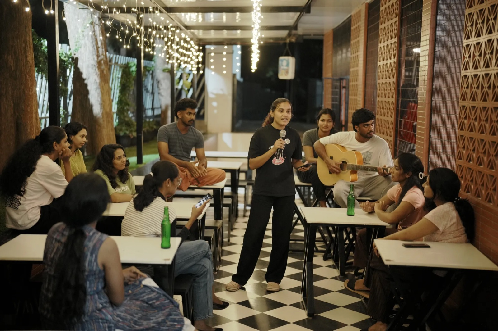
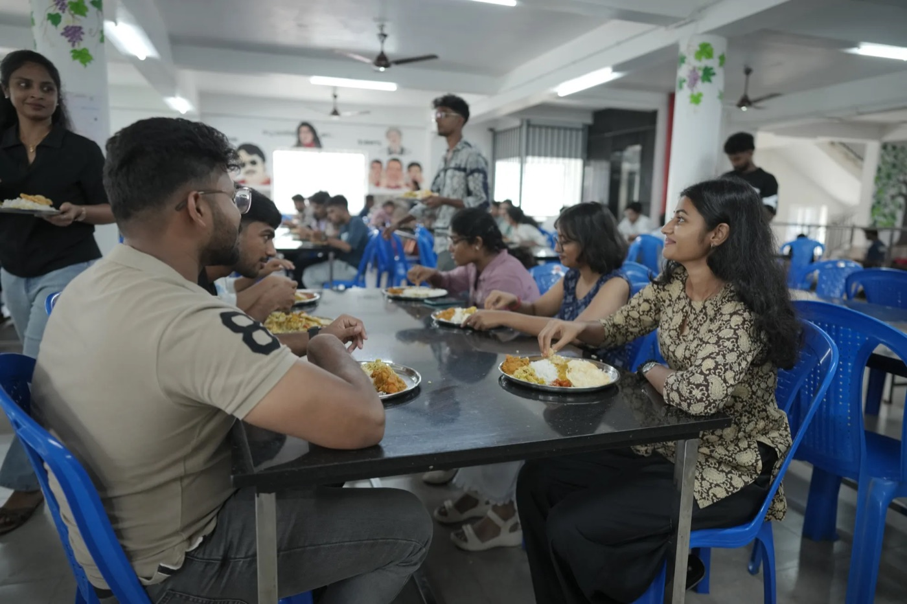

Refreshments
Fresh beverages, snacks and quick bites for an easy pause in the day.
Life at LEAD · Campus community
A pause in the day. A hundred ways to connect. At the heart of campus, Curio is where students recharge over a cup of tea, catch up across batches and let the next idea take shape.

The everyday hub
Learning does not stop when class ends. At Curio, informal conversations can become moments of discovery, collaboration and community — one cup, one exchange, one idea at a time.
Unlike a typical cafeteria or kiosk, Curio is woven into the rhythm of student life at LEAD.
Six reasons to drop by
Curio is the one place on campus where every student — whatever their programme or year — has room to recharge and feel part of the community.
Fresh beverages, snacks and quick bites for an easy pause in the day.
An open setting for casual debates, life advice and everything between.
Share a startup thought, a course insight or a creative spark over tea.
Meet students from different batches and programmes naturally.
Step away, breathe and reset between focused academic sessions.
Build friendships and bonds that continue beyond a semester or batch.

Collaboration & ideas
Some of the conversations that shape student learning begin informally. Curio gives students room to brainstorm, compare perspectives and refine an idea together.
Discuss assignments and group projects
Exchange perspectives on classroom learning
Plan campus activities and events
Brainstorm entrepreneurial ideas and initiatives
Interact informally with faculty and mentors
Build cross-batch and cross-programme friendships
The LEAD community spirit
“Curio is the informal heart of campus — where students recharge, connect and keep learning in a relaxed, friendly atmosphere.”
Students from every programme and year meet here, making friendships that last beyond their time at LEAD.
A short pause between sessions can restore focus and energy for the rest of the day.
Shared moments over tea and conversation become part of the community students carry forward.